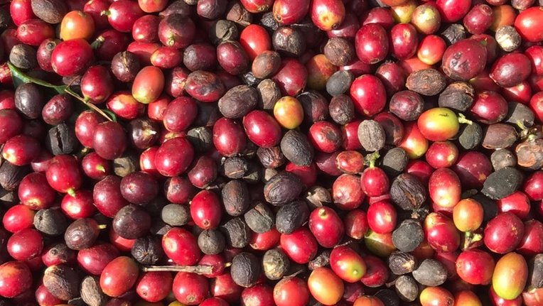
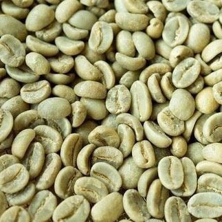

1. 커피벨트(Coffee Belt)
커피를 재배하기 적당한 북, 남회귀선(북위 25도, 남위 25도) 사이의 벨트 지대. 커피 존(Coffee Zone)이라고도 합니다.
2. 서스테이너블 커피(Sustainable coffee: 지속 가능한 커피)
재배 지역을 발전, 커피 재배 농가의 삶의 질 개선, 수질과 토양, 생물 다양성을 보호하며 장기적인 관점에서 안정적으로 커피를 생산하는 시스템입니다.
유기농 커피(Organic coffee), 셰이딩 커피(Shaded coffee), 공정무역 커피(Fair trade coffee) 등이 이 범주에 해당합니다.
3. 공정무역 커피(Fair trade coffee)
국제공정무역 기구의 인증을 받은 커피입니다. 커피 생산자와 소비자 간의 공정한 거래가 이루어져 유통되는 커피인 만큼 생산국 노동자들의 삶의 질 향상에 도움이 되는 좋은 취지의 커피입니다.
4. 싱글 오리진 커피(Single Origin Coffee)
단일 지역, 단일 품종으로 재배된 커피를 뜻하며 일반적으로 블렌드 커피와는 반대의 개념으로 커피의 재배 조건에 따라 독특하고 뛰어난 개성을 느낄 수 있습니다.
5. 스페셜티 커피(Specialty coffee)
미국 스페셜티 커피 협회(SCAA)의 기준을 통과한 품질이 뛰어난 커피를 뜻합니다. 특정한 기후와 지형적 조건 등에서 자란 좋은 품질의 커피라고 할 수 있습니다.
6. 컵 오브 엑셀런스(Cup of Excellence, C.O.E)
브라질, 볼리비아, 콜롬비아, 코스타리카, 엘살바도르, 과테말라, 온두라스, 니카라과, 르완다 등의 커피 재배국에서 매년 심사를 통해 선정된 최고의 커피에 부여되는 명칭입니다.
7. 마이크로랏 커피 (Microlot coffee)
대규모의 농장이 아닌 특정한 구역에서 생산된 소량의 커피를 뜻합니다. 때문에 더 높고 균일한 품질을 기대할 수 있습니다. 일반적으로 동일한 품종, 농장 및 농장주의 이력 등도 알 수 있습니다. 스페셜티 커피 또한 이 마이크로랏 커피의 일부라고 볼 수 있습니다.

8. 커피체리(Coffee Cherry)
과육과 과피를 포함한 커피 열매를 커피 체리라고 합니다. 과육(펄프:Pulp)을 제거한 씨앗(Green Bean)이 우리가 알고 있는 커피콩입니다.
9. 아라비카(Arabica, Coffea Arabica)
세계 커피 생산량의 60~70%를 차지하는 대표적인 커피 품종(Coffea Arabica)입니다. 로부스타에 비에 맛과 향이 뛰어납니다.
원산지는 에티오피아이며, 최대 생산 국가 브라질입니다.
10. 로부스타(Robusta)
코페아 카네포라(Coffea Canephora)의 대표 품종으로 세계 커피 생산량의 30~40%를 차지한다고 합니다. 통상적으로 코페아 카네포라 종을 로부스타로 부르는 경향이 있습니다. 최대 생산국은 베트남입니다.

11. 피베리(Peaberry)
일반적으로 커피체리에 두 개의 커피 씨앗이 들어있는 것과는 달리 한 개의 씨앗만 들어있는 경우가 있습니다. 이 커피 빈을 피베리라 하며 그 모양이 동글동글하게 생겼습니다. (일반적인 커피콩의 경우 두 개가 들어있기 때문에 한쪽이 납작하며 플랫빈이라 부릅니다.)
12. 떼루아(terroir)
커피에 영향을 주는 지리적 기후적 요인. 토양, 강수량, 태양, 바람, 경사, 관개, 배수 등의 환경 등이 떼루아에 속합니다. 같은 품종이더라도 이러한 환경에 따라 각기 다른 개성을 지니게 됩니다.